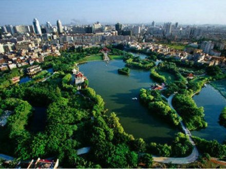
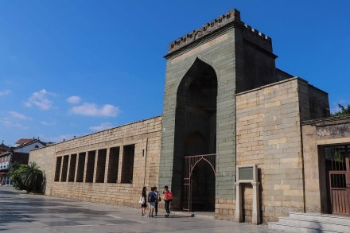
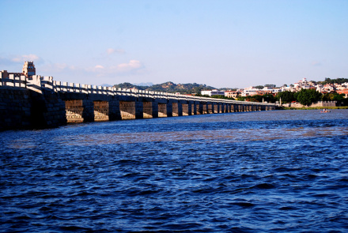

|

泉州东湖公园泉州东湖公园位于泉州城区东北隅，北望清源山，东眺灵山圣墓，南邻城郊村舍，西联商业大街，是号称“鲤鱼城”之鲤珠所在地，又是原泉州十大胜景之“星湖荷香”的遗址。 |
|---|

安平桥安平桥享有“天下无桥长此桥”之誉。为全国重点文物保护单位。位于中国福建省晋江市安海镇和南安市水头镇之间的海湾上。因安海镇古称安平道，由此得名；又因桥长约5华里，俗称五里桥。安平桥属于中国古代连梁式石板平桥，始建于南宋绍兴八年（1138年），历时十四年告成。明清两代曾多次重修。1961年，安平桥成为第一批公布的全国重点文物保护单位之一。 |
崇武古城崇武古城地处福建省东南沿海的突出部、泉州湾和湄洲湾之间、惠安县境东南24千米的崇武半岛南端，濒临台湾海峡，亦称“莲岛”，始建于明洪武二十年（1387年），是一处集滨海风光、历史文物、民俗风情、雕刻艺术于一体的国家AAAA级旅游景区，被誉为“天然影棚”、“南方北戴河”。 |
|

涂门街涂门街位于泉州市区中心地带，东起温陵路，西至中山路，全长1005米，是集商贸、旅游、文化等为一体的繁荣地段。在这条长仅1000余米的街道上，分布着13处宋元文化遗存——清净寺、孔子文庙、通淮关岳庙、东观西台、祖闾苏、世家大厝、棋盘园、东鲁巷、三十二间巷等。 |
|

洛阳桥洛阳桥原名万安桥，中国四大古桥之一，在洛阳江口，距泉州城5千米，北宋皇祐五年至嘉祐四年，由泉州知州蔡襄主持修造。列为全国重点文物保护单位。桥长834米，宽7米。其“筏型基础”“种蛎固基法”，是中国乃至世界造桥技术创举，被称为：“北有赵州桥，南有洛阳桥。” |
古城泉州 半城烟火半城仙
welcome to QuanZhou|泉州欢迎您！